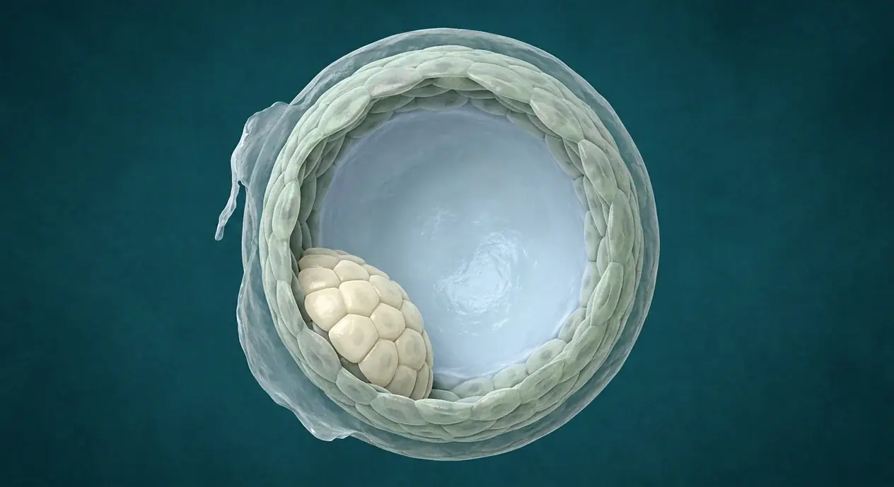

ORGAN → UNDER THE LENS
Zygote · first cleavage plan
Tap to compare the organ region with a tissue-level teaching illustration.
Read about Zygote ↓During the first week after conception, the fertilized egg divides repeatedly without growing larger, reorganizing itself into a hollow sphere ready for implantation. In this illustrated guide to zygote cleavage and blastocyst, we examine 20 documented structures—including zygote, first cleavage, blastomere, four-cell stage—linking regional topography, tissue architecture, physiological mechanisms, and clinical reasoning.

Zona pellucida during transitOuter trophoblast layerHatching from zonaPreimplantation to implantationEmbryonic poleEarly embryonic splittingInner cell massCavitationBlastocoelDuring the first week after conception, the fertilized egg divides repeatedly without growing larger, reorganizing itself into a hollow sphere ready for implantation. After fertilization in a uterine tube, the zygote divides into blastomeres while moving toward the uterus. Early cleavage increases cell number without major increase in overall size inside the zona pellucida. Compaction forms a morula, then a fluid-filled blastocoel and two broad cell populations define the blastocyst: outer trophectoderm/trophoblast and an inner cell mass. Hatching from the zona precedes adhesion to endometrium. Timing varies; the illustration shows one blastocyst only, not a timed sequence or an implanted embryo. Within the human body, the zygote to blastocyst · early divisions (Segmentatio et blastocystis) is situated in early conceptus moves from tube toward uterine cavity.
Structurally, the zygote comprises diploid one-cell conceptus results after fertilization of one oocyte by one sperm. Physiologically, the zygote begins early development. The first cleavage is the zygote divides into two blastomeres without the usual cell growth between divisions. Physiologically, the first cleavage begins increase in cell number. Structurally, the blastomere comprises each early daughter cell forms as the conceptus cleaves in its surrounding zona. Physiologically, the blastomere governs builds the multicellular early conceptus. Structurally, the four-cell stage comprises additional cleavage creates a small group of blastomeres still enclosed by zona. Physiologically, the four-cell stage extends early proliferation. Structurally, the zygote comprises diploid one-cell conceptus results after fertilization of one oocyte by one sperm. Physiologically, the zygote begins early development. The first cleavage is the zygote divides into two blastomeres without the usual cell growth between divisions. Physiologically, the first cleavage begins increase in cell number.
Clinically, regarding the zygote, a zygote has not yet implanted and is not a fetus. From a diagnostic standpoint, in the first cleavage, exact day of the first division is variable. Early cleavage raises cell number before major overall growth.
Connected study pathways in this atlas: Fertilization · sperm meets oocyte, Implantation · blastocyst in endometrium, Uterus — layers & cavity.
These are educational cutaways, not literal magnifications of an organ pixel or laboratory slides. A ring marks the approximate tissue region; part-specific lines appear only where identifiable.
Tap to compare the organ region with a tissue-level teaching illustration.
Read about Zygote ↓Tap to compare the organ region with a tissue-level teaching illustration.
Read about First cleavage ↓Tap to compare the organ region with a tissue-level teaching illustration.
Read about Four-cell stage ↓Tap to compare the organ region with a tissue-level teaching illustration.
Read about Eight-cell stage ↓Tap to compare the organ region with a tissue-level teaching illustration.
Read about Compaction ↓Sperm and egg are separate branches before fertilization. Obstetric gestational weeks are usually counted from the last menstrual period, roughly two weeks before conception. Digital labor-stage illustrations model separate moments, not clinical birth photographs or patient measurements.
Tap an image to enlarge and tap again to close. These are digital educational models, not microscope photos, measured ultrasounds, clinical birth images or exact developmental clocks.
Original explanatory vector-style cell diagram, not a microscopic photograph.
Two blastomeres within a conceptual zona; relative positions are simplified.
Four blastomeres inside the zona; cell divisions do not imply marked growth of the whole conceptus.
Eight conceptual blastomeres remain within the zona; this is a vector-style diagram, not a micrograph.
A solid group of 16 conceptual cells; no blastocoel yet.
Different later stage: a hollow blastocyst, not a zygote or morula.
These 20 structures describe anatomy related to the chapter’s regional illustration. Each entry separates location, function and a clinical point.
Diploid one-cell conceptus results after fertilization of one oocyte by one sperm.
What it doesBegins early development.
Clinical connectionA zygote has not yet implanted and is not a fetus.
Illustrated plate Original explanatory vector-style cell diagram, not a microscopic photograph.
The zygote divides into two blastomeres without the usual cell growth between divisions.
What it doesBegins increase in cell number.
Clinical connectionExact day of the first division is variable.
Illustrated plate Two blastomeres within a conceptual zona; relative positions are simplified.
Each early daughter cell forms as the conceptus cleaves in its surrounding zona.
What it doesBuilds the multicellular early conceptus.
Clinical connectionOne blastomere alone is not the same as a mature embryo.
Illustrated plate Two blastomeres within a conceptual zona; relative positions are simplified.
Additional cleavage creates a small group of blastomeres still enclosed by zona.
What it doesExtends early proliferation.
Clinical connectionThis single blastocyst plate does not show a four-cell stage.
Illustrated plate Four blastomeres inside the zona; cell divisions do not imply marked growth of the whole conceptus.
Further divisions make smaller blastomeres as the early conceptus approaches compaction.
What it doesSets up more extensive cell-to-cell contact.
Clinical connectionDo not count blastocyst cells to infer a precise day.
Illustrated plate Eight conceptual blastomeres remain within the zona; this is a vector-style diagram, not a micrograph.
Extracellular glycoprotein envelope persists around early cleavage stages.
What it doesLimits premature attachment during tubal passage.
Clinical connectionA tube is not the intended implantation site.
Illustrated plate Different later stage: a hollow blastocyst, not a zygote or morula.
Cilia and tubal contractile activity help move the dividing conceptus into uterine cavity.
What it doesPositions conceptus for later endometrial interaction.
Clinical connectionImpaired transport may increase ectopic pregnancy risk.
Illustrated plate Marked with a precision pointer on the corresponding developmental or regional anatomy plate.
Blastomeres strengthen contacts and organize an outer and inner cell arrangement.
What it doesPrepares for tissue-population divergence.
Clinical connectionNot individually resolved in a late blastocyst teaching render.
Illustrated plate A solid group of 16 conceptual cells; no blastocoel yet.
Solid compact cluster of blastomeres forms before a fluid-filled cavity develops.
What it doesTransitional stage before blastocyst formation.
Clinical connectionA morula is not a hollow blastocyst.
Illustrated plate A solid group of 16 conceptual cells; no blastocoel yet.
Fluid accumulates within cell cluster and a blastocoel begins to form.
What it doesEstablishes fluid-filled inner space.
Clinical connectionThe large cavity in the plate depicts a blastocyst, not a fetus.
Illustrated plate Different later stage: a hollow blastocyst, not a zygote or morula.
Fluid-filled cavity occupies much of a blastocyst.
What it doesSeparates inner cell group and outer cell layer.
Clinical connectionNot the later amniotic sac around a fetus.
Illustrated plate Different later stage: a hollow blastocyst, not a zygote or morula.
Outer cell population surrounds the blastocyst; later contributes to extraembryonic tissues.
What it doesInteracts with maternal endometrium during implantation.
Clinical connectionA single outer-cell layer does not equal a mature placenta.
Illustrated plate Different later stage: a hollow blastocyst, not a zygote or morula.
Localized cluster on one side of blastocyst contributes to embryo proper and some extraembryonic tissues.
What it doesSeeds later embryonic development.
Clinical connectionIt is a group of cells, not a miniature baby.
Illustrated plate Different later stage: a hollow blastocyst, not a zygote or morula.
Side of the blastocyst containing the inner cell mass.
What it doesDefines a directional relationship as implantation begins.
Clinical connectionThis is not the maternal cervix or a fetal head.
Illustrated plate Different later stage: a hollow blastocyst, not a zygote or morula.
Expanding blastocyst emerges from the zona pellucida.
What it doesAllows cell surface to attach to receptive endometrium.
Clinical connectionAn unhatched conceptus has not directly attached.
Illustrated plate Different later stage: a hollow blastocyst, not a zygote or morula.
Preimplantation conceptus reaches endometrial environment after tubal transit.
What it doesProvides setting for hatching and eventual attachment.
Clinical connectionBeing in uterus is not the same as implantation.
Illustrated plate Marked with a precision pointer on the corresponding developmental or regional anatomy plate.
Uterine gland fluid supplies early trophic support before placental circulation is established.
What it doesSupports preimplantation growth.
Clinical connectionNo mature placenta feeds the early blastocyst on this image.
Illustrated plate Marked with a precision pointer on the corresponding developmental or regional anatomy plate.
Division, hatching and attachment timing vary from conceptus to conceptus.
What it doesPrevents treating image as a clinical day-by-day clock.
Clinical connectionPregnancy dating uses clinical methods rather than counting drawn cells.
Illustrated plate Original explanatory vector-style cell diagram, not a microscopic photograph.
One early conceptus can split and contribute to monozygotic twins.
What it doesExplains a distinct origin from two separately fertilized oocytes.
Clinical connectionThe plate depicts only one blastocyst.
Illustrated plate Different later stage: a hollow blastocyst, not a zygote or morula.
After hatching, trophoblast can adhere to receptive uterine lining.
What it doesLinks this chapter to the separate implantation chapter.
Clinical connectionDo not show a blastocyst free in lumen as already embedded.
Illustrated plate Different later stage: a hollow blastocyst, not a zygote or morula.
Short answers grounded in the structures described above. Use the illustrated guide for anatomical context.
It produces more, initially smaller, blastomeres while the conceptus remains within the zona pellucida. Early divisions do not require the whole sphere to grow much larger at every division. Structurally, the eight-cell stage comprises further divisions make smaller blastomeres as the early conceptus approaches compaction. Physiologically, the eight-cell stage governs sets up more extensive cell-to-cell contact.
A morula is a compact solid cluster. A blastocyst has a fluid-filled blastocoel, an outer cell layer and a localized inner cell mass; the illustration depicts the latter, not every earlier stage. The morula is solid compact cluster of blastomeres forms before a fluid-filled cavity develops. Physiologically, the morula governs transitional stage before blastocyst formation.
Its descendants contribute to the embryo proper and certain extraembryonic structures. A blastocyst cell cluster is not a miniature fully formed fetus. Structurally, the inner cell mass comprises localized cluster on one side of blastocyst contributes to embryo proper and some extraembryonic tissues. Physiologically, the inner cell mass governs seeds later embryonic development.
Loss of the extracellular zona permits trophoblast contact with receptive uterine endometrium. A conceptus still enclosed by the zona is not already embedded in uterine tissue. Structurally, the hatching from zona comprises expanding blastocyst emerges from the zona pellucida. Physiologically, the hatching from zona allows cell surface to attach to receptive endometrium.
Not necessarily. Arrival in the uterine cavity and hatching precede attachment to endometrium; implantation is a separate stage with variable timing. Structurally, the entry into uterine cavity comprises preimplantation conceptus reaches endometrial environment after tubal transit. Physiologically, the entry into uterine cavity provides setting for hatching and eventual attachment.
Follow these connected structures and body systems in the illustrated atlas.
 Fertilization · sperm meets oocyteFrom sperm capacitation and the acrosome reaction in the uterine tube ampulla to the fast cortical block against polyspermy and diploid zygote formation.↗
Fertilization · sperm meets oocyteFrom sperm capacitation and the acrosome reaction in the uterine tube ampulla to the fast cortical block against polyspermy and diploid zygote formation.↗ Implantation · blastocyst in endometriumHow the hatched blastocyst anchors to the receptive uterine endometrium, differentiates into cytotrophoblast and syncytiotrophoblast, and forms a bilaminar disc.↗
Implantation · blastocyst in endometriumHow the hatched blastocyst anchors to the receptive uterine endometrium, differentiates into cytotrophoblast and syncytiotrophoblast, and forms a bilaminar disc.↗ Uterus — layers & cavityFrom the dome-like fundus to the internal os: how the cyclic endometrium, thick smooth-muscle myometrium, and spiral arteries remodel across life stages.↗
Uterus — layers & cavityFrom the dome-like fundus to the internal os: how the cyclic endometrium, thick smooth-muscle myometrium, and spiral arteries remodel across life stages.↗ Female pelvis & perineumSagittal and perineal views of the female pelvis: bladder, anteverted uterus, vesicouterine and rectouterine pouches, levator ani floor, and perineal body.↗
Female pelvis & perineumSagittal and perineal views of the female pelvis: bladder, anteverted uterus, vesicouterine and rectouterine pouches, levator ani floor, and perineal body.↗General anatomy references and related source chapters for continued study. These links do not make the digital illustrations clinical images or certify every anatomical variant.
This educational page is not medical advice and has not undergone formal clinical peer review. Spotted an error? Contact the editor.
Open the regional digital plate, study entries and a short self-test. Visible markers occur only for identifiable sperm and oocyte structures.